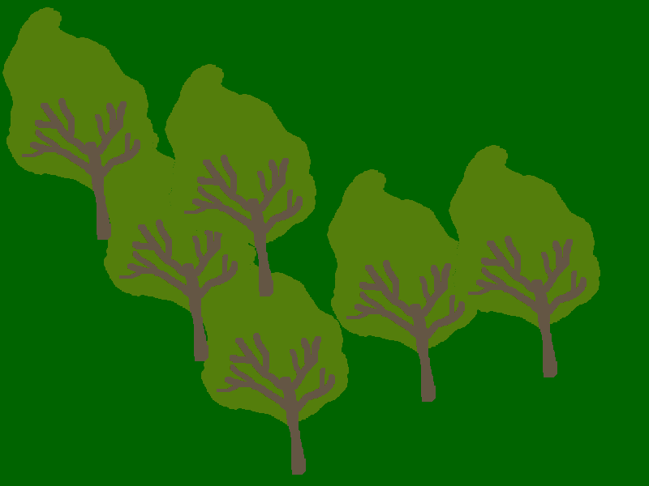

Показване на готови изображения¶
Рисуването на основни форми може да бъде забавно, а понякога и предизвикателство. И все пак би било още по-забавно да можем да комбинираме нашата рисунка с готови снимки или снимки. В PyGame среда това е много просто. Нека разгледаме следния пример:


В тази програма имаме две нови функции на PyGame:
Функция
pg.image.loadзарежда изображението от диска. Предаваме името на файла, съдържащ изображението, на тази функция (пътят до файла може да бъде включен) и в резултат на това той връща изображението във формат, подходящ за програма. Трябва да запишем този резултат в някаква променлива (в примера това е променливата tree_image);Функция
blitпоказва изображение в даден прозорец. Аргументите на тази функция са променлива, съдържаща изображението (резултат от функция pg.image.load) и позиция \((x, y)' в прозореца, където искаме изображението да се показва. В позицията, която сме задали, ще се появи горният ляв ъгъл на изображението. В примера задаваме позицията :math:\), така че горният ляв ъгъл на изображението се появява в горния ляв ъгъл на прозореца.
Опитайте да въведете различни стойности на координатите вместо \((0, 0)\), за да получите по-добро разбиране за това как работи blit функцията. Можем да наблюдаваме, че показването на готови изображения е подобно на показването на подвижни рисунки с помощта на котва.
Можете също да опитате да покажете едно изображение на множество места на екрана, както направихме с основните форми. Просто извикайте функцията blit няколко пъти с различни стойности за местоположението на дисплея.
Когато показвате изображение на няколко места, изображенията могат да се припокриват. Затова трябва да се внимава за реда на показване. В нашия случай първо трябва да покажем дървото, което си представяме като по-нататък, а след това дървото, което си представяме като по-близко. В противен случай финалната сцена може да изглежда погрешна, както показва следната снимка.
Обектите, които възприемаме като по-нататък, обикновено са в горната част на изображението, което означава, че имат по-малка \(y\) координата, въпреки че това не винаги може да е вярно. В този и подобни примери ще бъде достатъчно да се придържаме към това просто правило: по-добре е първо да се покажат обекти с по-малкa \(y\) координата.
Задачи за упражнение¶

{kind=link}
Задача - дървета
В следната програма коригирайте реда на позициите на дърветата в списъка и след това добавете оператор, за да нарисувате дърво на позиция (x, y) в цикъла.
Задача - ябълки
Завършете програмата, като нарисувате дървото с ябълките (както е в примера).
After you finish the program, you can also try modifying the program to display an apple tree 100 pixels to the right and 50 pixels lower.
Задача - шахмат
Напишете програма, която очертава позиция в шах, както е в примера. Файловете за празна шахматна дъска, бял крал, бял топ и черен крал са съответно: “chess_table.png”, “white_king.png”, “white_rook.png”, “black_king.png”.

{kind=link}


Задача - овощна градина
В следващата задача е стартирано рисуването на овощната градина. Ако стартираме програмата, ще забележим някои несъответствия. Един от проблемите е, че ябълките се намират само на първото дърво и те трябва да бъдат разположени на всяко дърво, подредени по един и същи начин. В допълнение, второто дърво отляво припокрива най-лявото дърво, но не припокрива ябълките си. Трябва да покажем дървото, което показваме по-рано, заедно с неговите ябълки, преди да преминем към следващото дърво.
Коригирайте програмата така, че да показва полученото изображение, като щракнете върху бутона „Play Task“.